142 images
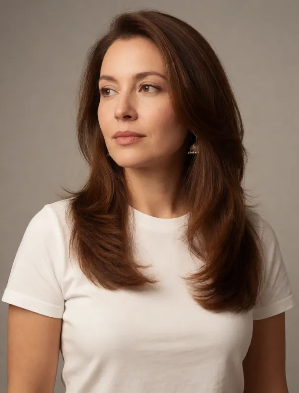
krea 2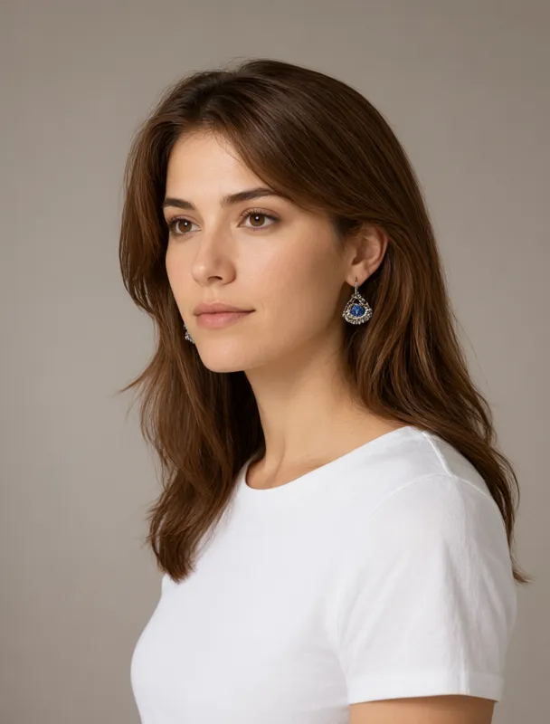
qwen image 2.1a full color studio portrait photograph in three-quarter view, framed from the shoulders up, lit by a soft diffused key light against a plain warm gray backdrop. the subject is a mixed race woman of about twenty five with light skin. her hair is chestnut brown, long blowout layers. she wears a plain white crew-neck t-shirt. she wears jhumka earrings. her hair is tucked behind her ear, leaving the ear nearest the camera clearly visible. she is turned three quarters toward the left side of the frame and gazes off to the left side of the frame, away from the camera.
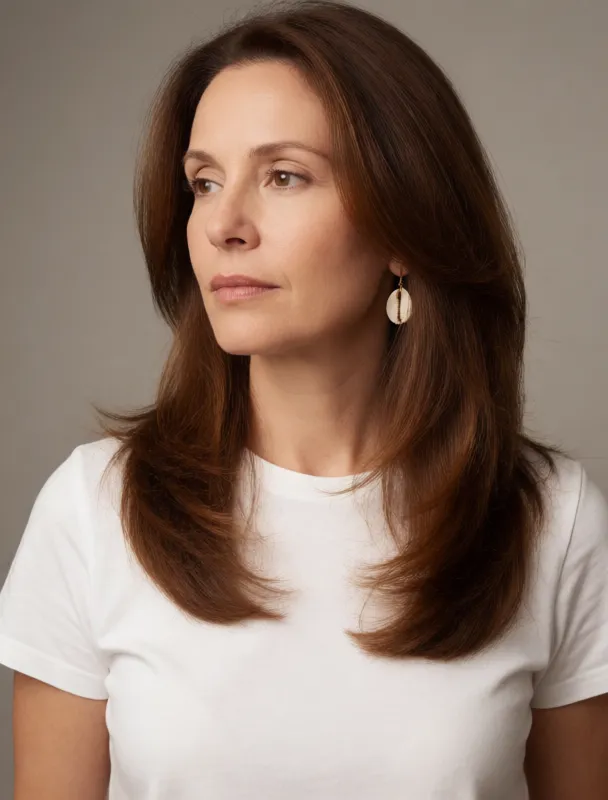
krea 2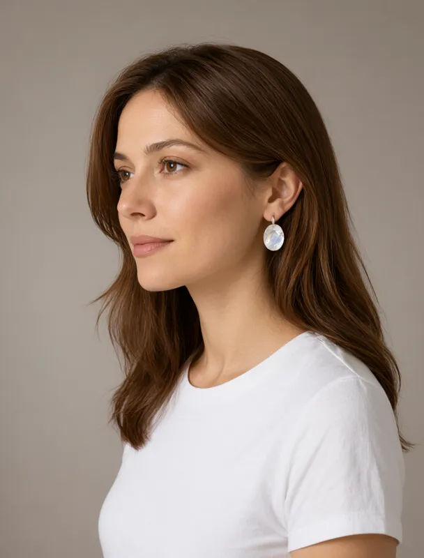
qwen image 2.1a full color studio portrait photograph in three-quarter view, framed from the shoulders up, lit by a soft diffused key light against a plain warm gray backdrop. the subject is a mixed race woman of about twenty five with light skin. her hair is chestnut brown, long blowout layers. she wears a plain white crew-neck t-shirt. she wears capiz shell earrings. her hair is tucked behind her ear, leaving the ear nearest the camera clearly visible. she is turned three quarters toward the left side of the frame and gazes off to the left side of the frame, away from the camera.
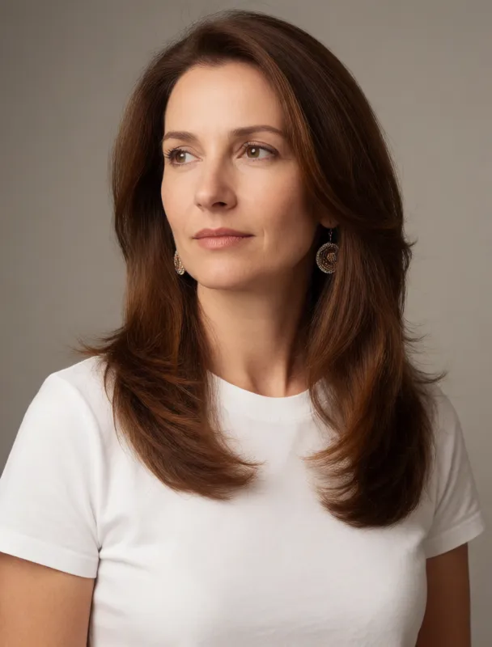
krea 2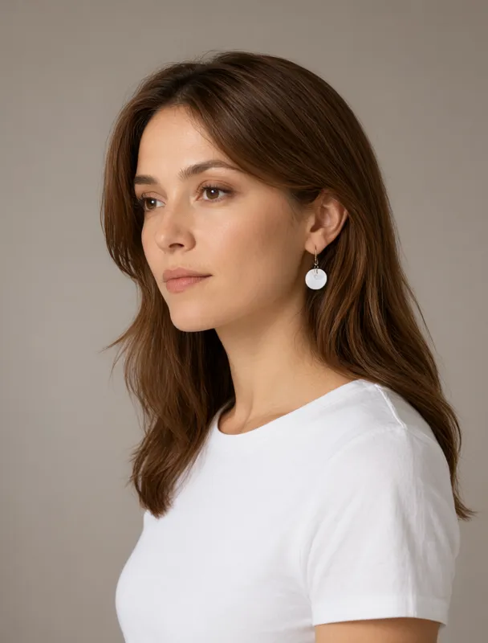
qwen image 2.1a full color studio portrait photograph in three-quarter view, framed from the shoulders up, lit by a soft diffused key light against a plain warm gray backdrop. the subject is a mixed race woman of about twenty five with light skin. her hair is chestnut brown, long blowout layers. she wears a plain white crew-neck t-shirt. she wears beaded disc earrings. her hair is tucked behind her ear, leaving the ear nearest the camera clearly visible. she is turned three quarters toward the left side of the frame and gazes off to the left side of the frame, away from the camera.
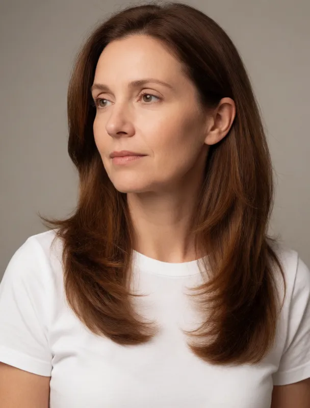
krea 2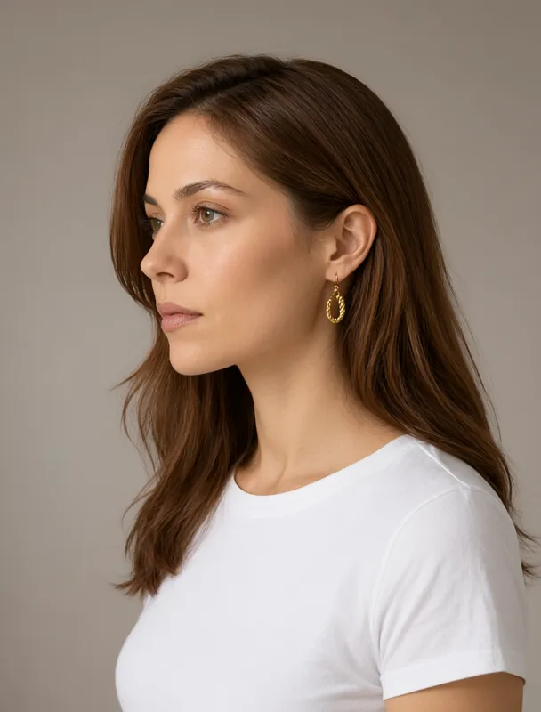
qwen image 2.1a full color studio portrait photograph in three-quarter view, framed from the shoulders up, lit by a soft diffused key light against a plain warm gray backdrop. the subject is a mixed race woman of about twenty five with light skin. her hair is chestnut brown, long blowout layers. she wears a plain white crew-neck t-shirt. she wears twisted gold fulani earrings. her hair is tucked behind her ear, leaving the ear nearest the camera clearly visible. she is turned three quarters toward the left side of the frame and gazes off to the left side of the frame, away from the camera.
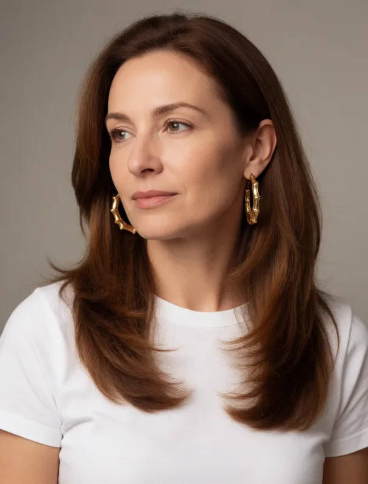
krea 2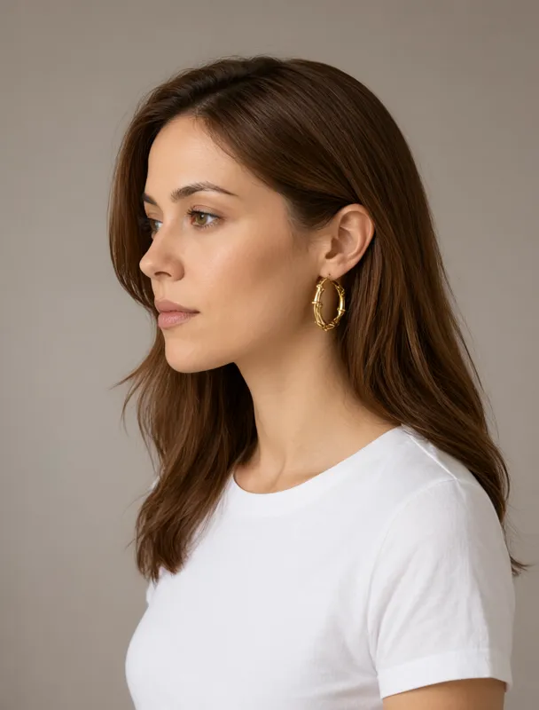
qwen image 2.1a full color studio portrait photograph in three-quarter view, framed from the shoulders up, lit by a soft diffused key light against a plain warm gray backdrop. the subject is a mixed race woman of about twenty five with light skin. her hair is chestnut brown, long blowout layers. she wears a plain white crew-neck t-shirt. she wears large gold bamboo hoops. her hair is tucked behind her ear, leaving the ear nearest the camera clearly visible. she is turned three quarters toward the left side of the frame and gazes off to the left side of the frame, away from the camera.
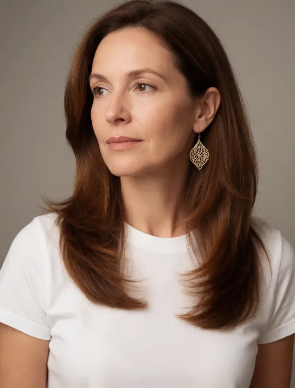
krea 2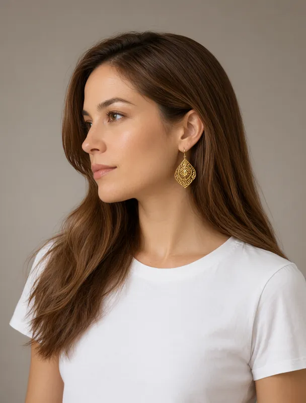
qwen image 2.1a full color studio portrait photograph in three-quarter view, framed from the shoulders up, lit by a soft diffused key light against a plain warm gray backdrop. the subject is a mixed race woman of about twenty five with light skin. her hair is chestnut brown, long blowout layers. she wears a plain white crew-neck t-shirt. she wears oaxacan gold filigree earrings. her hair is tucked behind her ear, leaving the ear nearest the camera clearly visible. she is turned three quarters toward the left side of the frame and gazes off to the left side of the frame, away from the camera.
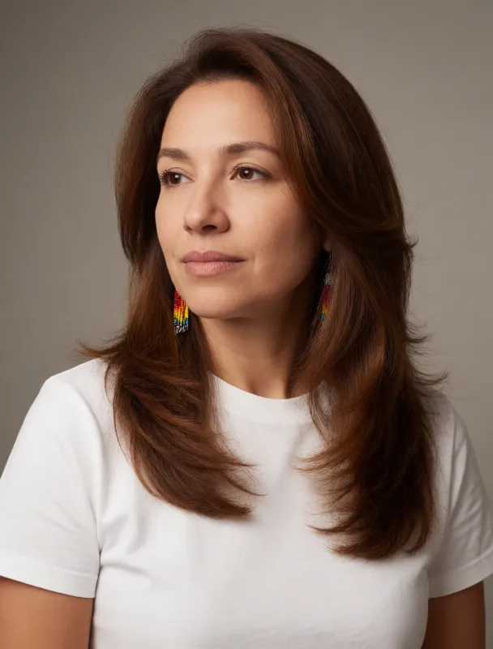
krea 2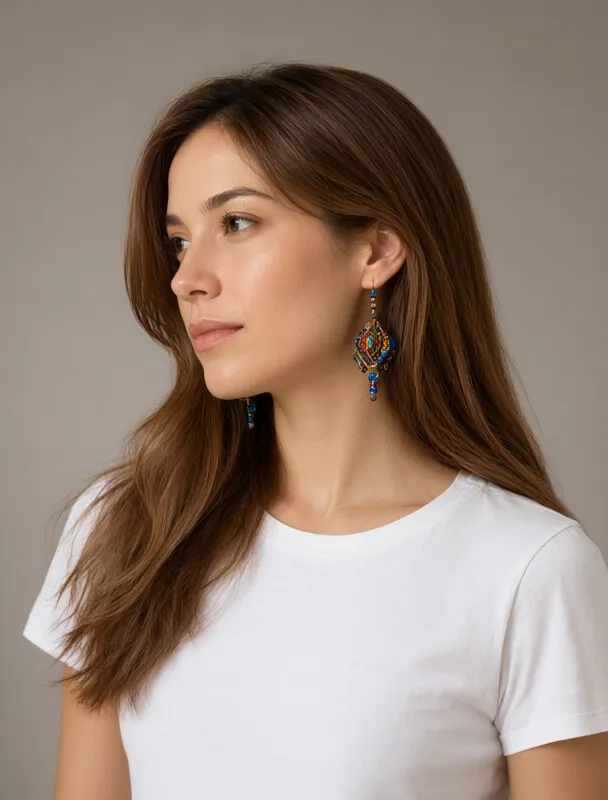
qwen image 2.1a full color studio portrait photograph in three-quarter view, framed from the shoulders up, lit by a soft diffused key light against a plain warm gray backdrop. the subject is a mixed race woman of about twenty five with light skin. her hair is chestnut brown, long blowout layers. she wears a plain white crew-neck t-shirt. she wears wixárika beaded earrings. her hair is tucked behind her ear, leaving the ear nearest the camera clearly visible. she is turned three quarters toward the left side of the frame and gazes off to the left side of the frame, away from the camera.
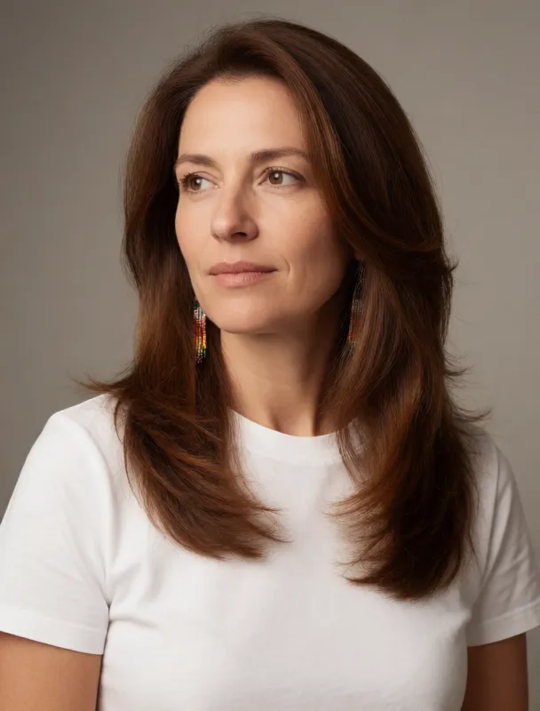
krea 2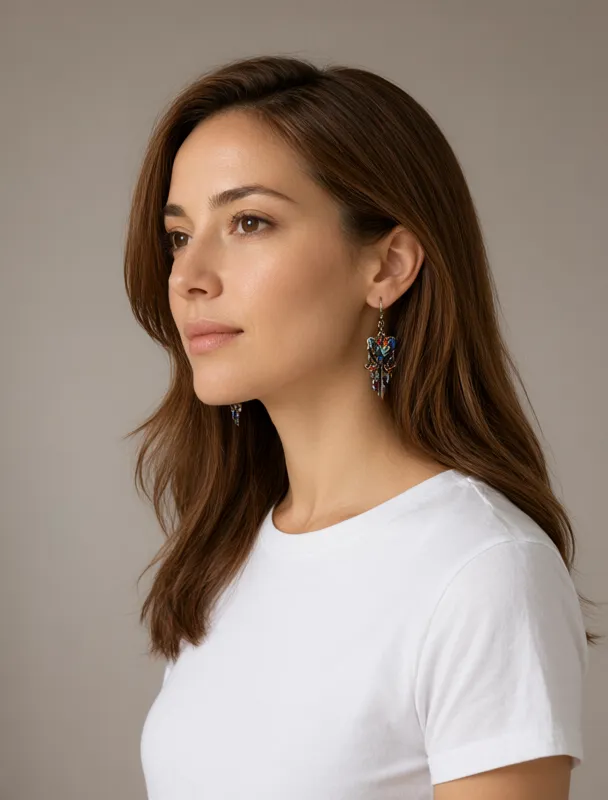
qwen image 2.1a full color studio portrait photograph in three-quarter view, framed from the shoulders up, lit by a soft diffused key light against a plain warm gray backdrop. the subject is a mixed race woman of about twenty five with light skin. her hair is chestnut brown, long blowout layers. she wears a plain white crew-neck t-shirt. she wears métis beaded earrings. her hair is tucked behind her ear, leaving the ear nearest the camera clearly visible. she is turned three quarters toward the left side of the frame and gazes off to the left side of the frame, away from the camera.
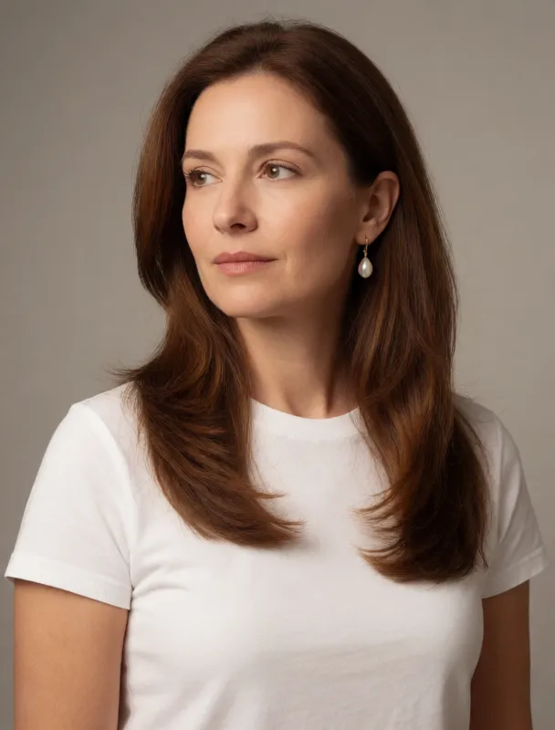
krea 2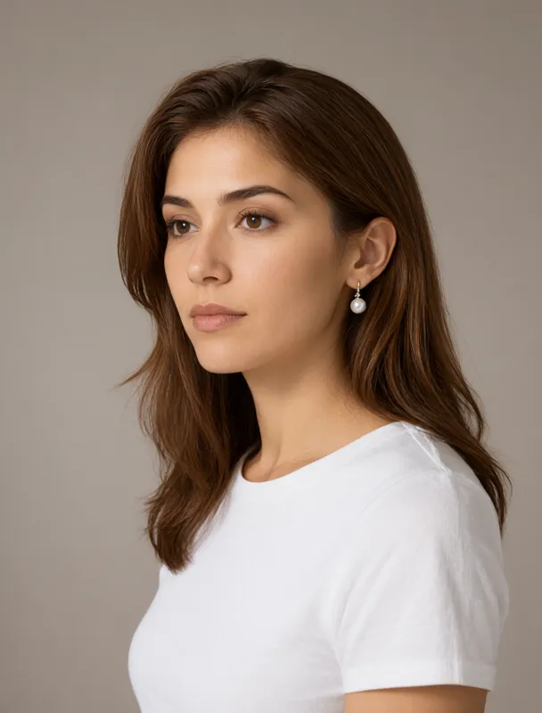
qwen image 2.1a full color studio portrait photograph in three-quarter view, framed from the shoulders up, lit by a soft diffused key light against a plain warm gray backdrop. the subject is a mixed race woman of about twenty five with light skin. her hair is chestnut brown, long blowout layers. she wears a plain white crew-neck t-shirt. she wears pearl drop earrings. her hair is tucked behind her ear, leaving the ear nearest the camera clearly visible. she is turned three quarters toward the left side of the frame and gazes off to the left side of the frame, away from the camera.
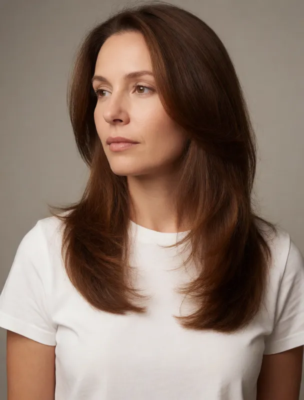
krea 2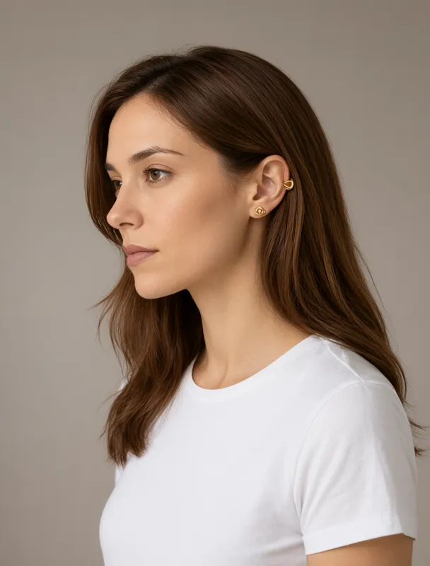
qwen image 2.1a full color studio portrait photograph in three-quarter view, framed from the shoulders up, lit by a soft diffused key light against a plain warm gray backdrop. the subject is a mixed race woman of about twenty five with light skin. her hair is chestnut brown, long blowout layers. she wears a plain white crew-neck t-shirt. she wears oorijzer gold ear irons. her hair is tucked behind her ear, leaving the ear nearest the camera clearly visible. she is turned three quarters toward the left side of the frame and gazes off to the left side of the frame, away from the camera.
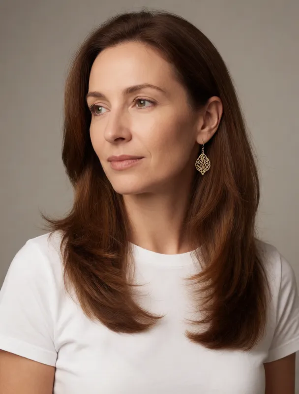
krea 2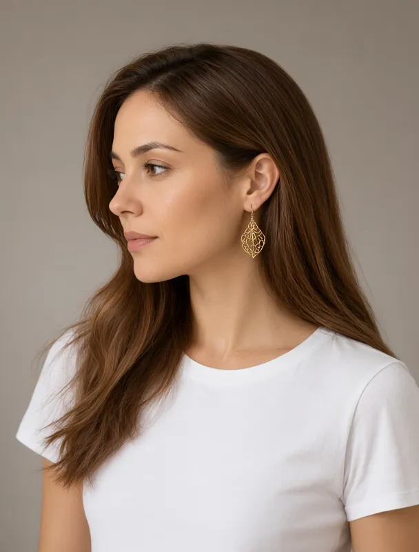
qwen image 2.1a full color studio portrait photograph in three-quarter view, framed from the shoulders up, lit by a soft diffused key light against a plain warm gray backdrop. the subject is a mixed race woman of about twenty five with light skin. her hair is chestnut brown, long blowout layers. she wears a plain white crew-neck t-shirt. she wears viana gold filigree earrings. her hair is tucked behind her ear, leaving the ear nearest the camera clearly visible. she is turned three quarters toward the left side of the frame and gazes off to the left side of the frame, away from the camera.
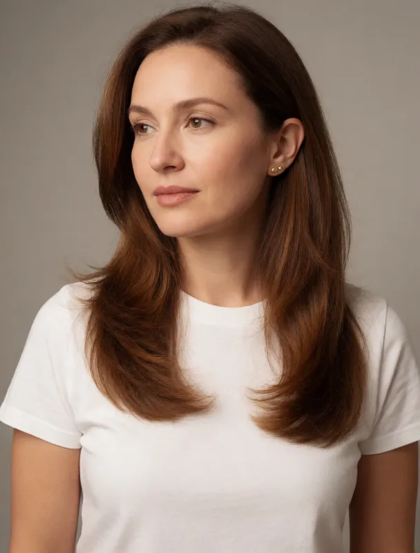
krea 2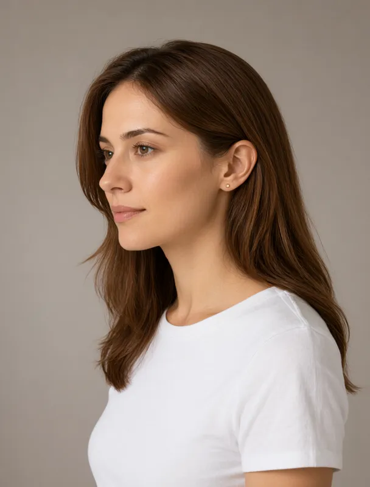
qwen image 2.1a full color studio portrait photograph in three-quarter view, framed from the shoulders up, lit by a soft diffused key light against a plain warm gray backdrop. the subject is a mixed race woman of about twenty five with light skin. her hair is chestnut brown, long blowout layers. she wears a plain white crew-neck t-shirt. she wears small gold studs. her hair is tucked behind her ear, leaving the ear nearest the camera clearly visible. she is turned three quarters toward the left side of the frame and gazes off to the left side of the frame, away from the camera.
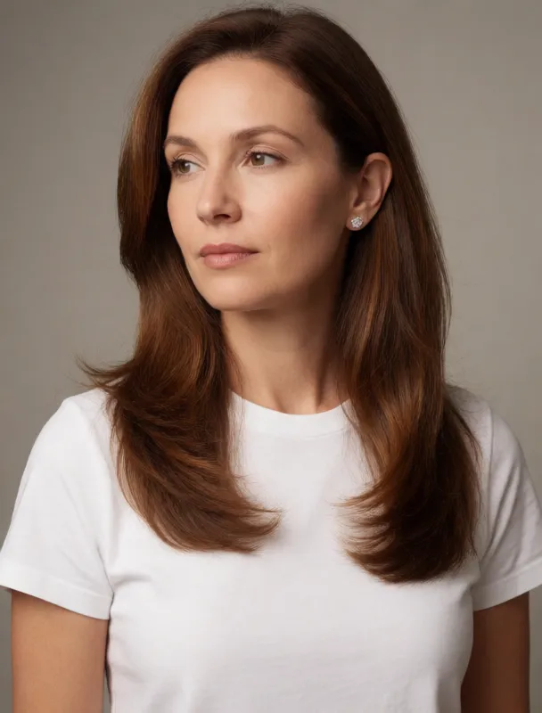
krea 2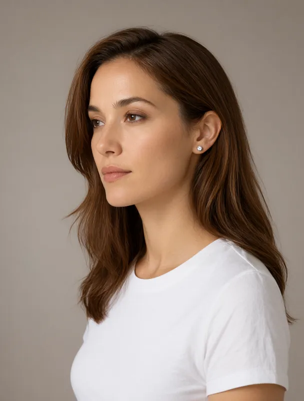
qwen image 2.1a full color studio portrait photograph in three-quarter view, framed from the shoulders up, lit by a soft diffused key light against a plain warm gray backdrop. the subject is a mixed race woman of about twenty five with light skin. her hair is chestnut brown, long blowout layers. she wears a plain white crew-neck t-shirt. she wears diamond studs. her hair is tucked behind her ear, leaving the ear nearest the camera clearly visible. she is turned three quarters toward the left side of the frame and gazes off to the left side of the frame, away from the camera.
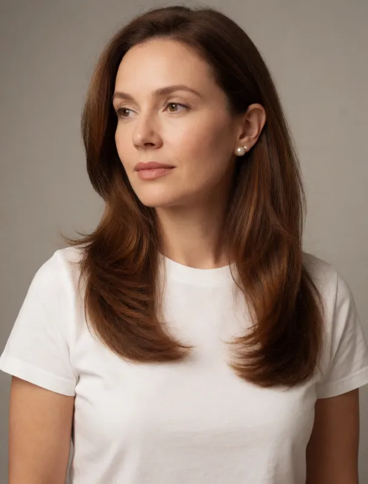
krea 2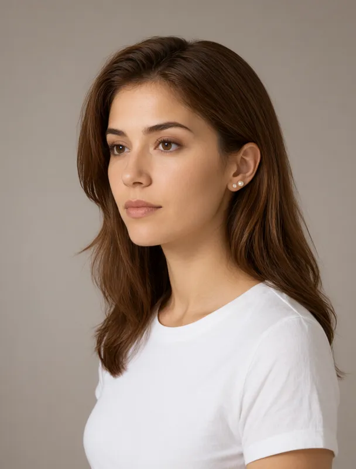
qwen image 2.1a full color studio portrait photograph in three-quarter view, framed from the shoulders up, lit by a soft diffused key light against a plain warm gray backdrop. the subject is a mixed race woman of about twenty five with light skin. her hair is chestnut brown, long blowout layers. she wears a plain white crew-neck t-shirt. she wears pearl studs. her hair is tucked behind her ear, leaving the ear nearest the camera clearly visible. she is turned three quarters toward the left side of the frame and gazes off to the left side of the frame, away from the camera.
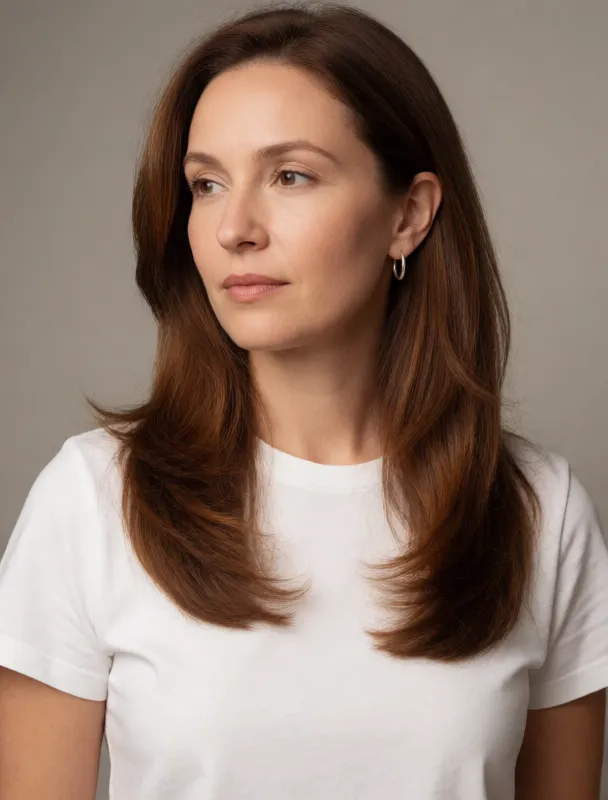
krea 2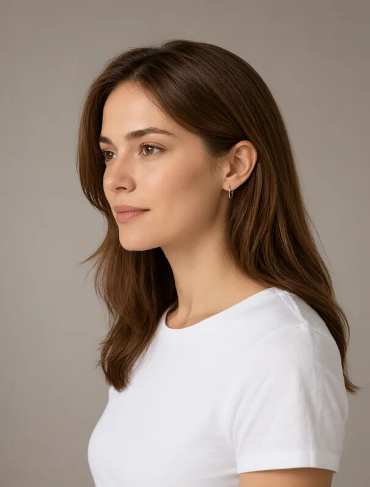
qwen image 2.1a full color studio portrait photograph in three-quarter view, framed from the shoulders up, lit by a soft diffused key light against a plain warm gray backdrop. the subject is a mixed race woman of about twenty five with light skin. her hair is chestnut brown, long blowout layers. she wears a plain white crew-neck t-shirt. she wears small silver hoops. her hair is tucked behind her ear, leaving the ear nearest the camera clearly visible. she is turned three quarters toward the left side of the frame and gazes off to the left side of the frame, away from the camera.
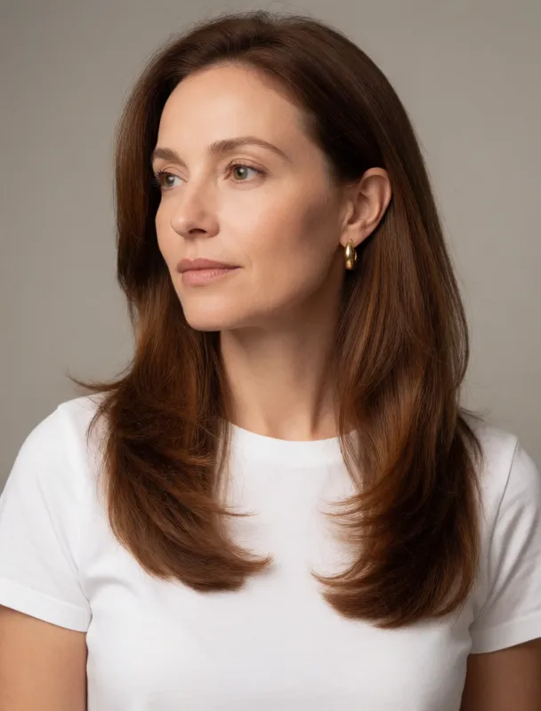
krea 2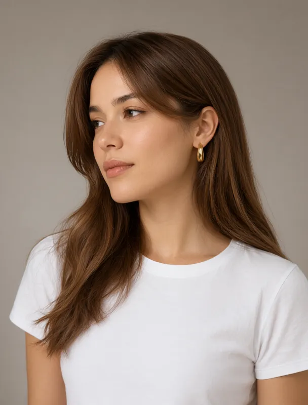
qwen image 2.1a full color studio portrait photograph in three-quarter view, framed from the shoulders up, lit by a soft diffused key light against a plain warm gray backdrop. the subject is a mixed race woman of about twenty five with light skin. her hair is chestnut brown, long blowout layers. she wears a plain white crew-neck t-shirt. she wears gold huggie hoops. her hair is tucked behind her ear, leaving the ear nearest the camera clearly visible. she is turned three quarters toward the left side of the frame and gazes off to the left side of the frame, away from the camera.
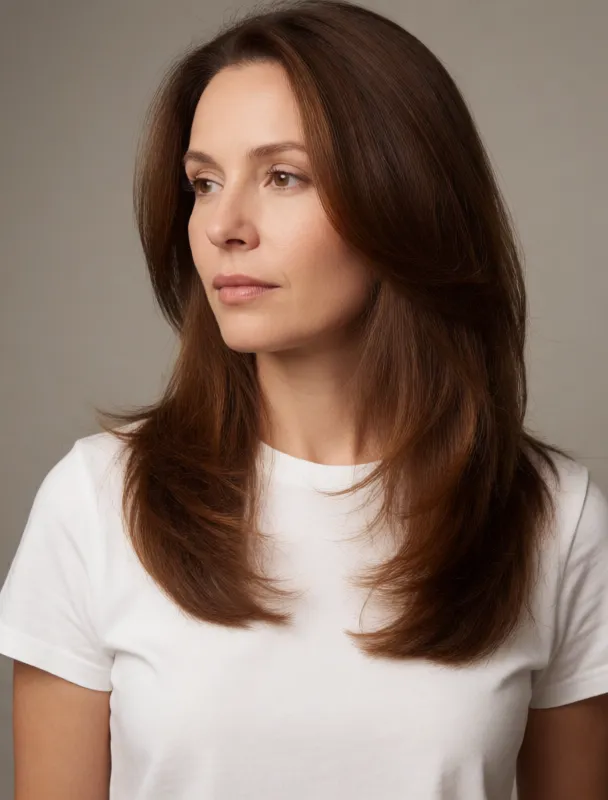
krea 2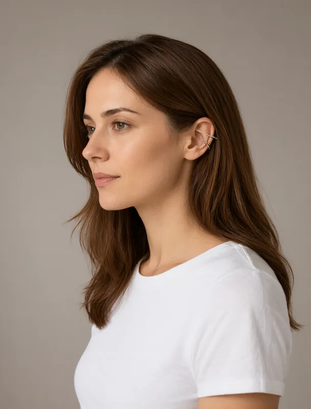
qwen image 2.1a full color studio portrait photograph in three-quarter view, framed from the shoulders up, lit by a soft diffused key light against a plain warm gray backdrop. the subject is a mixed race woman of about twenty five with light skin. her hair is chestnut brown, long blowout layers. she wears a plain white crew-neck t-shirt. she wears ear cuff. her hair is tucked behind her ear, leaving the ear nearest the camera clearly visible. she is turned three quarters toward the left side of the frame and gazes off to the left side of the frame, away from the camera.
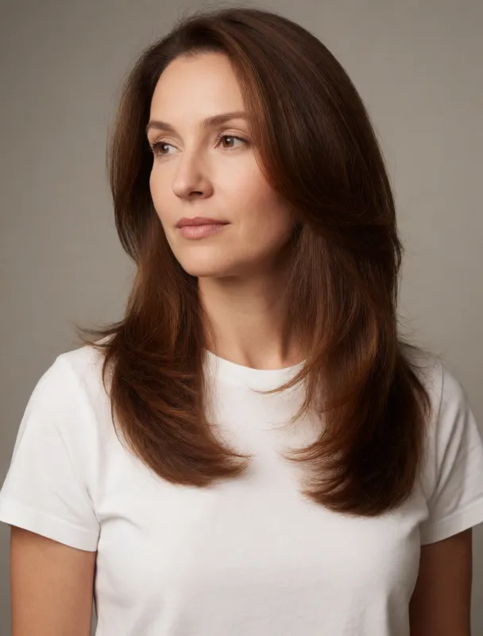
krea 2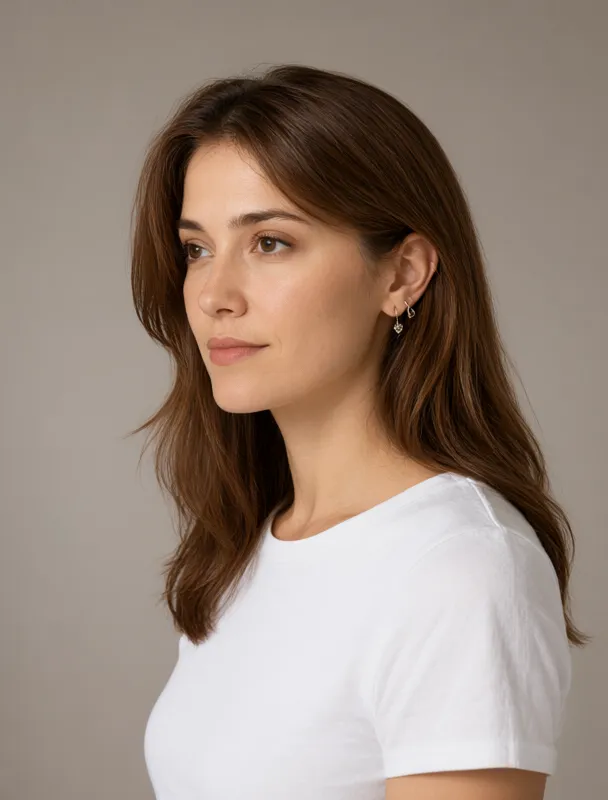
qwen image 2.1a full color studio portrait photograph in three-quarter view, framed from the shoulders up, lit by a soft diffused key light against a plain warm gray backdrop. the subject is a mixed race woman of about twenty five with light skin. her hair is chestnut brown, long blowout layers. she wears a plain white crew-neck t-shirt. she wears ear climber earrings. her hair is tucked behind her ear, leaving the ear nearest the camera clearly visible. she is turned three quarters toward the left side of the frame and gazes off to the left side of the frame, away from the camera.
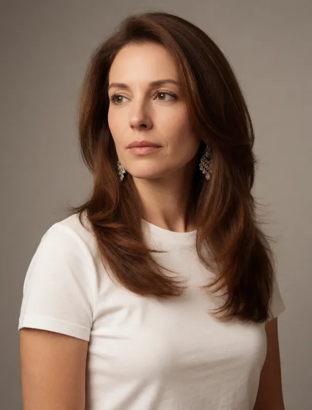
krea 2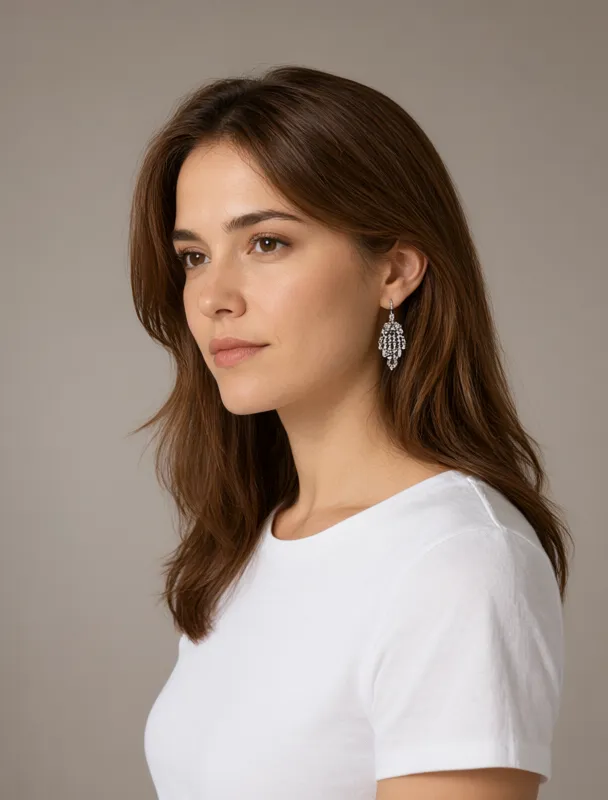
qwen image 2.1a full color studio portrait photograph in three-quarter view, framed from the shoulders up, lit by a soft diffused key light against a plain warm gray backdrop. the subject is a mixed race woman of about twenty five with light skin. her hair is chestnut brown, long blowout layers. she wears a plain white crew-neck t-shirt. she wears chandelier earrings. her hair is tucked behind her ear, leaving the ear nearest the camera clearly visible. she is turned three quarters toward the left side of the frame and gazes off to the left side of the frame, away from the camera.
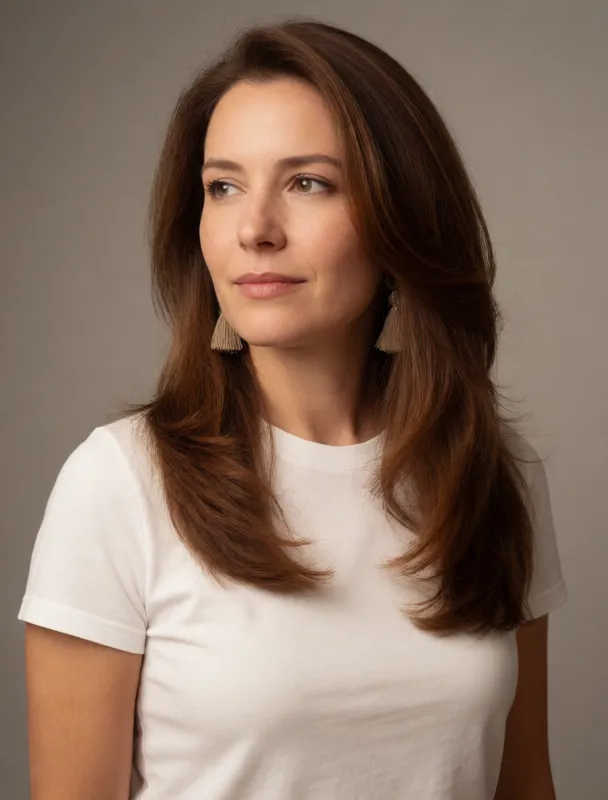
krea 2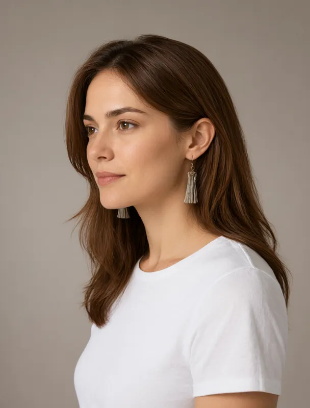
qwen image 2.1a full color studio portrait photograph in three-quarter view, framed from the shoulders up, lit by a soft diffused key light against a plain warm gray backdrop. the subject is a mixed race woman of about twenty five with light skin. her hair is chestnut brown, long blowout layers. she wears a plain white crew-neck t-shirt. she wears tassel earrings. her hair is tucked behind her ear, leaving the ear nearest the camera clearly visible. she is turned three quarters toward the left side of the frame and gazes off to the left side of the frame, away from the camera.
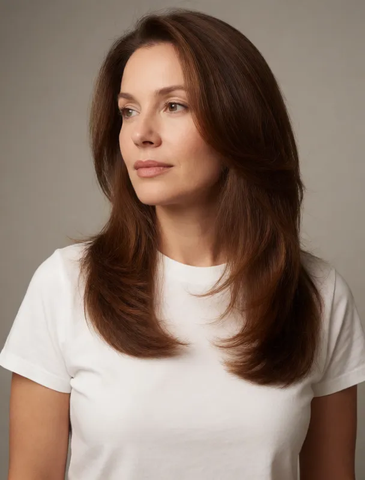
krea 2a full color studio portrait photograph in three-quarter view, framed from the shoulders up, lit by a soft diffused key light against a plain warm gray backdrop. the subject is a mixed race woman of about twenty five with light skin. her hair is chestnut brown, long blowout layers. she wears a plain white crew-neck t-shirt. she wears threader earrings. her hair is tucked behind her ear, leaving the ear nearest the camera clearly visible. she is turned three quarters toward the left side of the frame and gazes off to the left side of the frame, away from the camera.
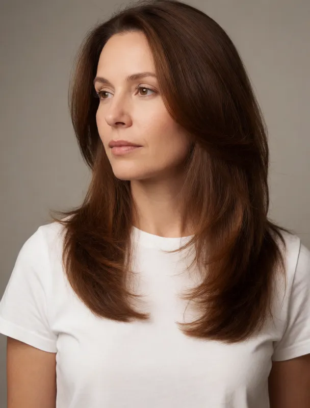
krea 2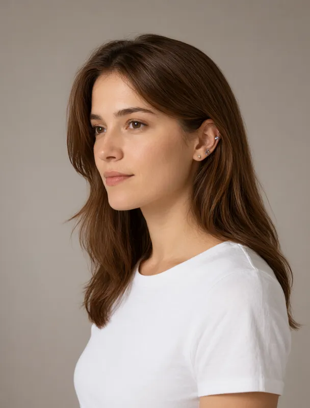
qwen image 2.1a full color studio portrait photograph in three-quarter view, framed from the shoulders up, lit by a soft diffused key light against a plain warm gray backdrop. the subject is a mixed race woman of about twenty five with light skin. her hair is chestnut brown, long blowout layers. she wears a plain white crew-neck t-shirt. she wears stacked ear piercings. her hair is tucked behind her ear, leaving the ear nearest the camera clearly visible. she is turned three quarters toward the left side of the frame and gazes off to the left side of the frame, away from the camera.
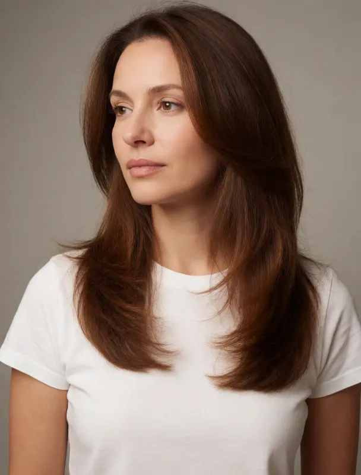
krea 2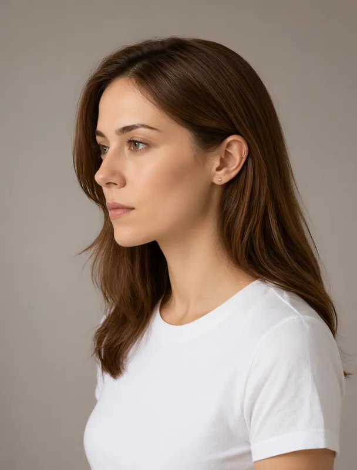
qwen image 2.1a full color studio portrait photograph in three-quarter view, framed from the shoulders up, lit by a soft diffused key light against a plain warm gray backdrop. the subject is a mixed race woman of about twenty five with light skin. her hair is chestnut brown, long blowout layers. she wears a plain white crew-neck t-shirt. she wears helix piercing. her hair is tucked behind her ear, leaving the ear nearest the camera clearly visible. she is turned three quarters toward the left side of the frame and gazes off to the left side of the frame, away from the camera.
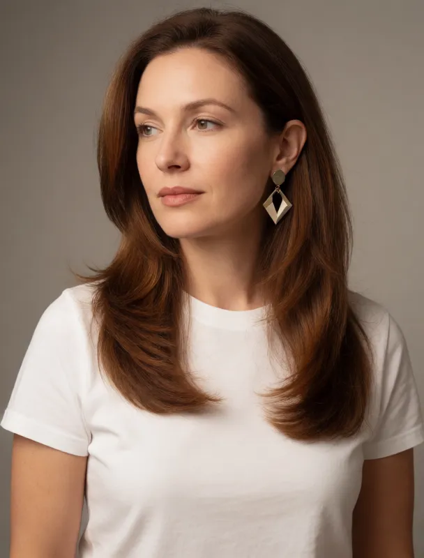
krea 2a full color studio portrait photograph in three-quarter view, framed from the shoulders up, lit by a soft diffused key light against a plain warm gray backdrop. the subject is a mixed race woman of about twenty five with light skin. her hair is chestnut brown, long blowout layers. she wears a plain white crew-neck t-shirt. she wears geometric statement earrings. her hair is tucked behind her ear, leaving the ear nearest the camera clearly visible. she is turned three quarters toward the left side of the frame and gazes off to the left side of the frame, away from the camera.
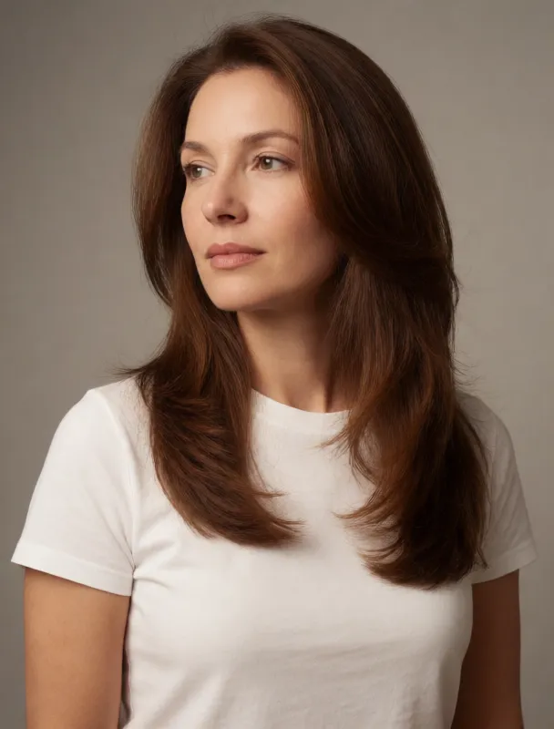
krea 2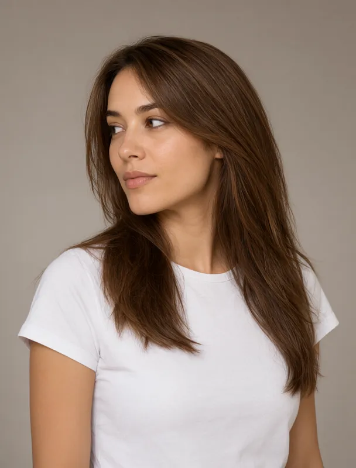
qwen image 2.1a full color studio portrait photograph in three-quarter view, framed from the shoulders up, lit by a soft diffused key light against a plain warm gray backdrop. the subject is a mixed race woman of about twenty five with light skin. her hair is chestnut brown, long blowout layers. she wears a plain white crew-neck t-shirt. she wears gau prayer amulet box. she is turned three quarters toward the left side of the frame and gazes off to the left side of the frame, away from the camera.
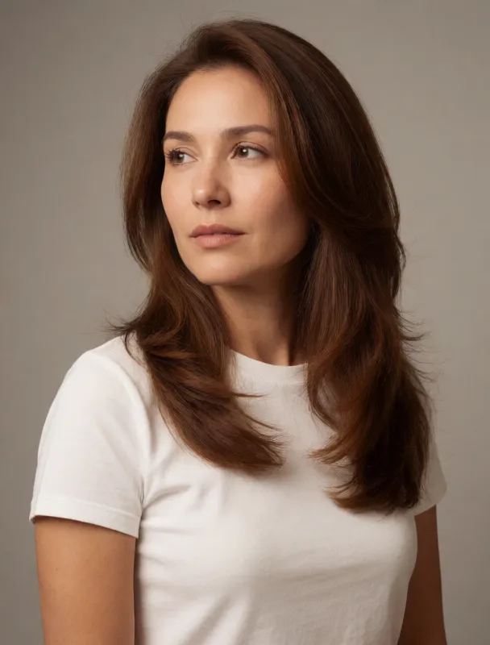
krea 2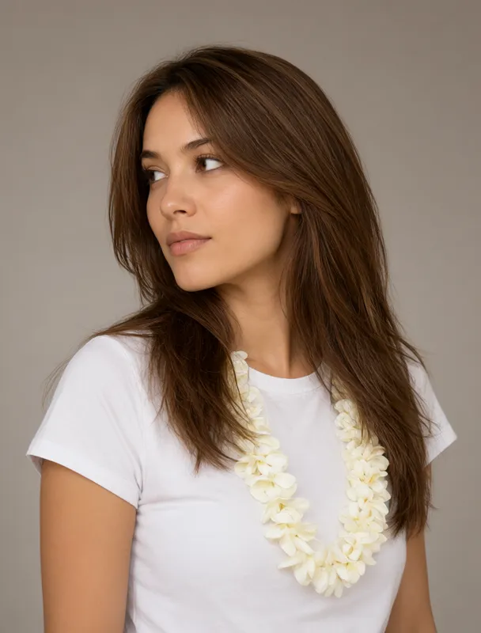
qwen image 2.1a full color studio portrait photograph in three-quarter view, framed from the shoulders up, lit by a soft diffused key light against a plain warm gray backdrop. the subject is a mixed race woman of about twenty five with light skin. her hair is chestnut brown, long blowout layers. she wears a plain white crew-neck t-shirt. she wears sampaguita garland. she is turned three quarters toward the left side of the frame and gazes off to the left side of the frame, away from the camera.
a full color studio portrait photograph in three-quarter view, framed from the shoulders up, lit by a soft diffused key light against a plain warm gray backdrop. the subject is a mixed race woman of about twenty five with light skin. her hair is chestnut brown, long blowout layers. she wears a plain white crew-neck t-shirt. she wears pounamu greenstone pendant. she is turned three quarters toward the left side of the frame and gazes off to the left side of the frame, away from the camera.
a full color studio portrait photograph in three-quarter view, framed from the shoulders up, lit by a soft diffused key light against a plain warm gray backdrop. the subject is a mixed race woman of about twenty five with light skin. her hair is chestnut brown, long blowout layers. she wears a plain white crew-neck t-shirt. she wears hei tiki pendant. she is turned three quarters toward the left side of the frame and gazes off to the left side of the frame, away from the camera.
a full color studio portrait photograph in three-quarter view, framed from the shoulders up, lit by a soft diffused key light against a plain warm gray backdrop. the subject is a mixed race woman of about twenty five with light skin. her hair is chestnut brown, long blowout layers. she wears a plain white crew-neck t-shirt. she wears shell lei. she is turned three quarters toward the left side of the frame and gazes off to the left side of the frame, away from the camera.
a full color studio portrait photograph in three-quarter view, framed from the shoulders up, lit by a soft diffused key light against a plain warm gray backdrop. the subject is a mixed race woman of about twenty five with light skin. her hair is chestnut brown, long blowout layers. she wears a plain white crew-neck t-shirt. she wears ula fala pandanus necklace. she is turned three quarters toward the left side of the frame and gazes off to the left side of the frame, away from the camera.
a full color studio portrait photograph in three-quarter view, framed from the shoulders up, lit by a soft diffused key light against a plain warm gray backdrop. the subject is a mixed race woman of about twenty five with light skin. her hair is chestnut brown, long blowout layers. she wears a plain white crew-neck t-shirt. she wears maasai beaded collar. she is turned three quarters toward the left side of the frame and gazes off to the left side of the frame, away from the camera.
a full color studio portrait photograph in three-quarter view, framed from the shoulders up, lit by a soft diffused key light against a plain warm gray backdrop. the subject is a mixed race woman of about twenty five with light skin. her hair is chestnut brown, long blowout layers. she wears a plain white crew-neck t-shirt. she wears coptic cross pendant. she is turned three quarters toward the left side of the frame and gazes off to the left side of the frame, away from the camera.
a full color studio portrait photograph in three-quarter view, framed from the shoulders up, lit by a soft diffused key light against a plain warm gray backdrop. the subject is a mixed race woman of about twenty five with light skin. her hair is chestnut brown, long blowout layers. she wears a plain white crew-neck t-shirt. she wears heavy gold filigree set. she is turned three quarters toward the left side of the frame and gazes off to the left side of the frame, away from the camera.
a full color studio portrait photograph in three-quarter view, framed from the shoulders up, lit by a soft diffused key light against a plain warm gray backdrop. the subject is a mixed race woman of about twenty five with light skin. her hair is chestnut brown, long blowout layers. she wears a plain white crew-neck t-shirt. she wears amber bead necklace. she is turned three quarters toward the left side of the frame and gazes off to the left side of the frame, away from the camera.
a full color studio portrait photograph in three-quarter view, framed from the shoulders up, lit by a soft diffused key light against a plain warm gray backdrop. the subject is a mixed race woman of about twenty five with light skin. her hair is chestnut brown, long blowout layers. she wears a plain white crew-neck t-shirt. she wears silver telsem amulet. she is turned three quarters toward the left side of the frame and gazes off to the left side of the frame, away from the camera.
a full color studio portrait photograph in three-quarter view, framed from the shoulders up, lit by a soft diffused key light against a plain warm gray backdrop. the subject is a mixed race woman of about twenty five with light skin. her hair is chestnut brown, long blowout layers. she wears a plain white crew-neck t-shirt. she wears khamsa pendant. she is turned three quarters toward the left side of the frame and gazes off to the left side of the frame, away from the camera.
a full color studio portrait photograph in three-quarter view, framed from the shoulders up, lit by a soft diffused key light against a plain warm gray backdrop. the subject is a mixed race woman of about twenty five with light skin. her hair is chestnut brown, long blowout layers. she wears a plain white crew-neck t-shirt. she wears agadez cross pendant. she is turned three quarters toward the left side of the frame and gazes off to the left side of the frame, away from the camera.
a full color studio portrait photograph in three-quarter view, framed from the shoulders up, lit by a soft diffused key light against a plain warm gray backdrop. the subject is a mixed race woman of about twenty five with light skin. her hair is chestnut brown, long blowout layers. she wears a plain white crew-neck t-shirt. she wears adinkra gold pendant. she is turned three quarters toward the left side of the frame and gazes off to the left side of the frame, away from the camera.
a full color studio portrait photograph in three-quarter view, framed from the shoulders up, lit by a soft diffused key light against a plain warm gray backdrop. the subject is a mixed race woman of about twenty five with light skin. her hair is chestnut brown, long blowout layers. she wears a plain white crew-neck t-shirt. she wears krobo glass bead necklace. she is turned three quarters toward the left side of the frame and gazes off to the left side of the frame, away from the camera.
a full color studio portrait photograph in three-quarter view, framed from the shoulders up, lit by a soft diffused key light against a plain warm gray backdrop. the subject is a mixed race woman of about twenty five with light skin. her hair is chestnut brown, long blowout layers. she wears a plain white crew-neck t-shirt. she wears ndebele brass neck rings. she is turned three quarters toward the left side of the frame and gazes off to the left side of the frame, away from the camera.
a full color studio portrait photograph in three-quarter view, framed from the shoulders up, lit by a soft diffused key light against a plain warm gray backdrop. the subject is a mixed race woman of about twenty five with light skin. her hair is chestnut brown, long blowout layers. she wears a plain white crew-neck t-shirt. she wears zulu beaded love-letter pendant. she is turned three quarters toward the left side of the frame and gazes off to the left side of the frame, away from the camera.
a full color studio portrait photograph in three-quarter view, framed from the shoulders up, lit by a soft diffused key light against a plain warm gray backdrop. the subject is a mixed race woman of about twenty five with light skin. her hair is chestnut brown, long blowout layers. she wears a plain white crew-neck t-shirt. she wears xhosa beaded collar. she is turned three quarters toward the left side of the frame and gazes off to the left side of the frame, away from the camera.
a full color studio portrait photograph in three-quarter view, framed from the shoulders up, lit by a soft diffused key light against a plain warm gray backdrop. the subject is a mixed race woman of about twenty five with light skin. her hair is chestnut brown, long blowout layers. she wears a plain white crew-neck t-shirt. she wears collier choux gold bead necklace. she is turned three quarters toward the left side of the frame and gazes off to the left side of the frame, away from the camera.
a full color studio portrait photograph in three-quarter view, framed from the shoulders up, lit by a soft diffused key light against a plain warm gray backdrop. the subject is a mixed race woman of about twenty five with light skin. her hair is chestnut brown, long blowout layers. she wears a plain white crew-neck t-shirt. she wears larimar pendant. she is turned three quarters toward the left side of the frame and gazes off to the left side of the frame, away from the camera.
a full color studio portrait photograph in three-quarter view, framed from the shoulders up, lit by a soft diffused key light against a plain warm gray backdrop. the subject is a mixed race woman of about twenty five with light skin. her hair is chestnut brown, long blowout layers. she wears a plain white crew-neck t-shirt. she wears nameplate necklace. she is turned three quarters toward the left side of the frame and gazes off to the left side of the frame, away from the camera.
a full color studio portrait photograph in three-quarter view, framed from the shoulders up, lit by a soft diffused key light against a plain warm gray backdrop. the subject is a mixed race woman of about twenty five with light skin. her hair is chestnut brown, long blowout layers. she wears a plain white crew-neck t-shirt. she wears turquoise squash-blossom necklace. she is turned three quarters toward the left side of the frame and gazes off to the left side of the frame, away from the camera.
a full color studio portrait photograph in three-quarter view, framed from the shoulders up, lit by a soft diffused key light against a plain warm gray backdrop. the subject is a mixed race woman of about twenty five with light skin. her hair is chestnut brown, long blowout layers. she wears a plain white crew-neck t-shirt. she wears welsh love spoon pendant. she is turned three quarters toward the left side of the frame and gazes off to the left side of the frame, away from the camera.
a full color studio portrait photograph in three-quarter view, framed from the shoulders up, lit by a soft diffused key light against a plain warm gray backdrop. the subject is a mixed race woman of about twenty five with light skin. her hair is chestnut brown, long blowout layers. she wears a plain white crew-neck t-shirt. she wears mjölnir pendant. she is turned three quarters toward the left side of the frame and gazes off to the left side of the frame, away from the camera.
a full color studio portrait photograph in three-quarter view, framed from the shoulders up, lit by a soft diffused key light against a plain warm gray backdrop. the subject is a mixed race woman of about twenty five with light skin. her hair is chestnut brown, long blowout layers. she wears a plain white crew-neck t-shirt. she wears edelweiss pendant. she is turned three quarters toward the left side of the frame and gazes off to the left side of the frame, away from the camera.
a full color studio portrait photograph in three-quarter view, framed from the shoulders up, lit by a soft diffused key light against a plain warm gray backdrop. the subject is a mixed race woman of about twenty five with light skin. her hair is chestnut brown, long blowout layers. she wears a plain white crew-neck t-shirt. she wears volendam coral choker. she is turned three quarters toward the left side of the frame and gazes off to the left side of the frame, away from the camera.
a full color studio portrait photograph in three-quarter view, framed from the shoulders up, lit by a soft diffused key light against a plain warm gray backdrop. the subject is a mixed race woman of about twenty five with light skin. her hair is chestnut brown, long blowout layers. she wears a plain white crew-neck t-shirt. she wears cornicello coral horn pendant. she is turned three quarters toward the left side of the frame and gazes off to the left side of the frame, away from the camera.
a full color studio portrait photograph in three-quarter view, framed from the shoulders up, lit by a soft diffused key light against a plain warm gray backdrop. the subject is a mixed race woman of about twenty five with light skin. her hair is chestnut brown, long blowout layers. she wears a plain white crew-neck t-shirt. she wears chunky gold chain. she is turned three quarters toward the left side of the frame and gazes off to the left side of the frame, away from the camera.
a full color studio portrait photograph in three-quarter view, framed from the shoulders up, lit by a soft diffused key light against a plain warm gray backdrop. the subject is a mixed race woman of about twenty five with light skin. her hair is chestnut brown, long blowout layers. she wears a plain white crew-neck t-shirt. she wears coral namysto necklace. she is turned three quarters toward the left side of the frame and gazes off to the left side of the frame, away from the camera.
a full color studio portrait photograph in three-quarter view, framed from the shoulders up, lit by a soft diffused key light against a plain warm gray backdrop. the subject is a mixed race woman of about twenty five with light skin. her hair is chestnut brown, long blowout layers. she wears a plain white crew-neck t-shirt. she wears gold coin necklace. she is turned three quarters toward the left side of the frame and gazes off to the left side of the frame, away from the camera.
a full color studio portrait photograph in three-quarter view, framed from the shoulders up, lit by a soft diffused key light against a plain warm gray backdrop. the subject is a mixed race woman of about twenty five with light skin. her hair is chestnut brown, long blowout layers. she wears a plain white crew-neck t-shirt. she wears baltic amber necklace. she is turned three quarters toward the left side of the frame and gazes off to the left side of the frame, away from the camera.
a full color studio portrait photograph in three-quarter view, framed from the shoulders up, lit by a soft diffused key light against a plain warm gray backdrop. the subject is a mixed race woman of about twenty five with light skin. her hair is chestnut brown, long blowout layers. she wears a plain white crew-neck t-shirt. she wears nazar evil-eye charm. she is turned three quarters toward the left side of the frame and gazes off to the left side of the frame, away from the camera.
a full color studio portrait photograph in three-quarter view, framed from the shoulders up, lit by a soft diffused key light against a plain warm gray backdrop. the subject is a mixed race woman of about twenty five with light skin. her hair is chestnut brown, long blowout layers. she wears a plain white crew-neck t-shirt. she wears pomegranate pendant. she is turned three quarters toward the left side of the frame and gazes off to the left side of the frame, away from the camera.
a full color studio portrait photograph in three-quarter view, framed from the shoulders up, lit by a soft diffused key light against a plain warm gray backdrop. the subject is a mixed race woman of about twenty five with light skin. her hair is chestnut brown, long blowout layers. she wears a plain white crew-neck t-shirt. she wears delicate gold chain. she is turned three quarters toward the left side of the frame and gazes off to the left side of the frame, away from the camera.
a full color studio portrait photograph in three-quarter view, framed from the shoulders up, lit by a soft diffused key light against a plain warm gray backdrop. the subject is a mixed race woman of about twenty five with light skin. her hair is chestnut brown, long blowout layers. she wears a plain white crew-neck t-shirt. she wears layered gold necklaces. she is turned three quarters toward the left side of the frame and gazes off to the left side of the frame, away from the camera.
a full color studio portrait photograph in three-quarter view, framed from the shoulders up, lit by a soft diffused key light against a plain warm gray backdrop. the subject is a mixed race woman of about twenty five with light skin. her hair is chestnut brown, long blowout layers. she wears a plain white crew-neck t-shirt. she wears pearl strand. she is turned three quarters toward the left side of the frame and gazes off to the left side of the frame, away from the camera.
a full color studio portrait photograph in three-quarter view, framed from the shoulders up, lit by a soft diffused key light against a plain warm gray backdrop. the subject is a mixed race woman of about twenty five with light skin. her hair is chestnut brown, long blowout layers. she wears a plain white crew-neck t-shirt. she wears velvet choker. she is turned three quarters toward the left side of the frame and gazes off to the left side of the frame, away from the camera.
a full color studio portrait photograph in three-quarter view, framed from the shoulders up, lit by a soft diffused key light against a plain warm gray backdrop. the subject is a mixed race woman of about twenty five with light skin. her hair is chestnut brown, long blowout layers. she wears a plain white crew-neck t-shirt. she wears tennis necklace. she is turned three quarters toward the left side of the frame and gazes off to the left side of the frame, away from the camera.
a full color studio portrait photograph in three-quarter view, framed from the shoulders up, lit by a soft diffused key light against a plain warm gray backdrop. the subject is a mixed race woman of about twenty five with light skin. her hair is chestnut brown, long blowout layers. she wears a plain white crew-neck t-shirt. she wears gold locket. she is turned three quarters toward the left side of the frame and gazes off to the left side of the frame, away from the camera.
a full color studio portrait photograph in three-quarter view, framed from the shoulders up, lit by a soft diffused key light against a plain warm gray backdrop. the subject is a mixed race woman of about twenty five with light skin. her hair is chestnut brown, long blowout layers. she wears a plain white crew-neck t-shirt. she wears initial pendant. she is turned three quarters toward the left side of the frame and gazes off to the left side of the frame, away from the camera.
a full color studio portrait photograph in three-quarter view, framed from the shoulders up, lit by a soft diffused key light against a plain warm gray backdrop. the subject is a mixed race woman of about twenty five with light skin. her hair is chestnut brown, long blowout layers. she wears a plain white crew-neck t-shirt. she wears small gold cross pendant. she is turned three quarters toward the left side of the frame and gazes off to the left side of the frame, away from the camera.
a full color studio portrait photograph in three-quarter view, framed from the shoulders up, lit by a soft diffused key light against a plain warm gray backdrop. the subject is a mixed race woman of about twenty five with light skin. her hair is chestnut brown, long blowout layers. she wears a plain white crew-neck t-shirt. she wears diamond solitaire pendant. she is turned three quarters toward the left side of the frame and gazes off to the left side of the frame, away from the camera.
a full color studio portrait photograph in three-quarter view, framed from the shoulders up, lit by a soft diffused key light against a plain warm gray backdrop. the subject is a mixed race woman of about twenty five with light skin. her hair is chestnut brown, long blowout layers. she wears a plain white crew-neck t-shirt. she wears bib statement necklace. she is turned three quarters toward the left side of the frame and gazes off to the left side of the frame, away from the camera.
a full color studio portrait photograph in three-quarter view, framed from the shoulders up, lit by a soft diffused key light against a plain warm gray backdrop. the subject is a mixed race woman of about twenty five with light skin. her hair is chestnut brown, long blowout layers. she wears a plain white crew-neck t-shirt. she wears gold collar necklace. she is turned three quarters toward the left side of the frame and gazes off to the left side of the frame, away from the camera.
a full color studio portrait photograph in three-quarter view, framed from the shoulders up, lit by a soft diffused key light against a plain warm gray backdrop. the subject is a mixed race woman of about twenty five with light skin. her hair is chestnut brown, long blowout layers. she wears a plain white crew-neck t-shirt. she wears paperclip chain. she is turned three quarters toward the left side of the frame and gazes off to the left side of the frame, away from the camera.
a full color studio portrait photograph in three-quarter view, framed from the shoulders up, lit by a soft diffused key light against a plain warm gray backdrop. the subject is a mixed race woman of about twenty five with light skin. her hair is chestnut brown, long blowout layers. she wears a plain white crew-neck t-shirt. she wears puka shell necklace. she is turned three quarters toward the left side of the frame and gazes off to the left side of the frame, away from the camera.
a full color studio portrait photograph in three-quarter view, framed from the shoulders up, lit by a soft diffused key light against a plain warm gray backdrop. the subject is a mixed race woman of about twenty five with light skin. her hair is chestnut brown, long blowout layers. she wears a plain white crew-neck t-shirt. she wears lariat necklace. she is turned three quarters toward the left side of the frame and gazes off to the left side of the frame, away from the camera.